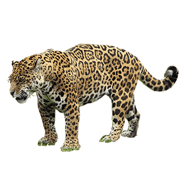
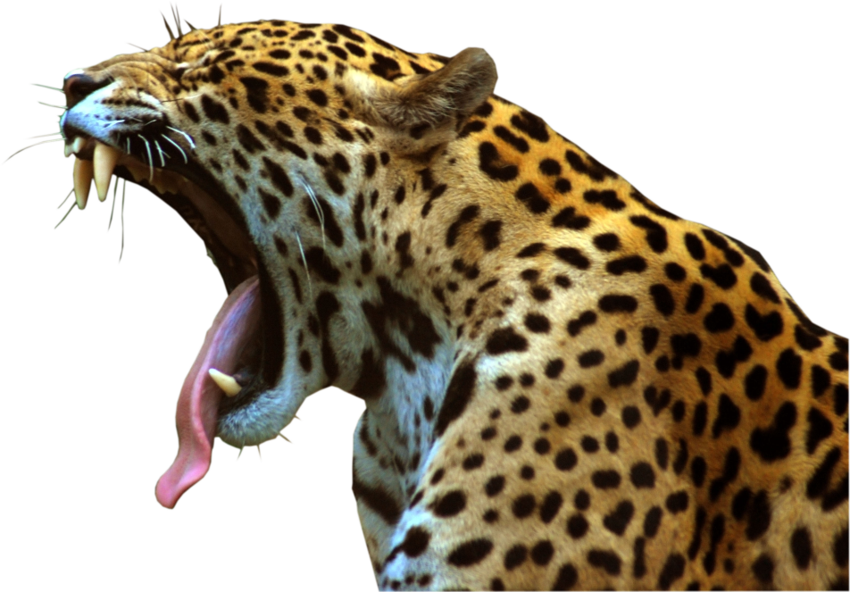

A onça-pintada (Panthera onca) é o maior felino das Américas, o terceiro maior felino do mundo, atrás apenas do tigre (Panthera tigris) e do leão (Panthera leo). É conhecida por diversos nomes nas diferentes regiões onde ocorre: onça-preta, jaguar, jaguaretê, yaguareté, tigre, canguçu, pintada, pinima, pinima-malha-larga e pixuna.
Considerada um predador do topo da cadeia, a onça-pintada reina absoluta nos ambientes onde vive, alimentando-se de pequenos tatus e cutias a jacarés e antas. Elas controlam populações de presas e são de extrema importância no equilíbrio dos ecossistemas onde estão inseridas. São carnívoras estritas, ou seja, alimentam-se exclusivamente de carne. Levando em consideração a proporção, têm a mordida mais poderosa entre os felinos, inclusive mais forte que a do tigre e a do leão.
É um animal com hábitos predominantemente crepusculares e noturnos, sendo mais ativo ao anoitecer e ao amanhecer, embora não seja raro encontrá-lo se deslocando e caçando durante a luz do dia. Sua área de vida varia muito, de acordo com o ambiente, a disponibilidade de presas e a densidade populacional de onças.
Habitat
Originalmente, a onça-pintada ocorria desde o sudoeste dos Estados Unidos até a região central da Argentina. Hoje, ocorre desde o México até o norte da Argentina. Está presente em quase todo o Brasil, que possui a maior população de onças-pintadas do mundo, sendo o principal país na conservação e sobrevivência da espécie em longo prazo.
As onças se adaptam a diversos tipos de ecossistemas. Podem ocorrem em áreas de floresta fechada, campos abertos ou regiões áridas e semidesérticas, apesar de preferirem áreas úmidas, com corpos d’água. No Brasil, ocorrem em quase todos os biomas, exceto no Pampa, onde já estão extintas.
No Pantanal e na Amazônia, as suas populações são maiores e mais estáveis, devido à menor taxa de ocupação humana e às maiores áreas preservadas. No Cerrado, a população é menor, mas ainda existe em números consideráveis. Já na Caatinga e na Mata Atlântica, existe em números muito pequenos, correndo sérios risco de extinção local.
As áreas de vida das onças podem variar muito de Norte a Sul do país devido a alguns fatores, como disponibilidade de presas, fontes de água, densidade populacional de outras onças e características do bioma.
A diferença de tamanho de habitat pode aparecer até entre animais vizinhos, por isso não é possível definir uma média geral para as onças. As áreas podem variar entre 30 km², no Pantanal, e 1.300 km², no Cerrado. As menores áreas são no Pantanal, provavelmente por causa da alta disponibilidade de comida. As maiores são no Cerrado e na Mata Atlântica, possivelmente devido à maior dificuldade de se encontrar alimento e outros recursos, como parceiros reprodutivos. Machos ocupam territórios em média três vezes maiores que os territórios de fêmeas.
Outro fator que pode interferir na área de vida são as crias. Fêmeas com filhotes ainda pequenos têm, geralmente, sua área de vida reduzida. Isso ocorre porque a mãe anda distâncias menores, uma vez que os filhotes não conseguem acompanhá-la em seu ritmo normal.
Características
A onça-pintada é um grande felino, pertencente à família Felidae. Pertence ao gênero Panthera, mesmo gênero dos leões, leopardos, tigres e leopardos-das-neves.
Tem uma coloração amarelo-dourada e pintas nas cabeças, patas e pescoço. No resto do corpo, possui rosetas com pintas no interior (uma das características que as distinguem dos leopardos), conferindo um alto grau de camuflagem quando está no interior da mata. O padrão de pintas é único para cada animal, ou seja, cada onça possui uma malha diferente de rosetas, funcionando como uma espécie de “impressão digital”. Isso nos ajuda a identificar cada indivíduo e melhor estudá-lo.
São animais grandes e musculosos, seu peso e tamanho podem variar de acordo com o ambiente. Em média, pesam entre 65 e 100 kg, porém machos com mais de 148 kg já foram registrados no Pantanal. Onças-pintadas do Pantanal são maiores e mais robustas que onças de outros biomas, devido, provavelmente, à maior disponibilidade de presas no bioma e à vegetação mais aberta. Em biomas como a Mata Atlântica e Amazônia, os indivíduos são menores e mais esguios, permitindo-os transitar mais facilmente por dentre a mata fechada.
Seu comprimento, do focinho até a ponta da cauda, pode chegar a 2,5 metros e 85 cm de cernelha (altura da pata dianteira até a escápula).
Assim como nos outros felinos do gênero Panthera (leão, leopardo, tigre e leopardo-das-neves), o osso hióide da onça-pintada, localizado na região da garganta, não é completamente ossificado, permitindo que este grupo de animais emita sons mais graves. O mais famoso deles é o rugido do leão, que pode ser ouvido a mais de 5 km de distância. Nas onças-pintadas, esse som é conhecido como esturro.
Comportamento
As onças-pintadas, em geral, são animais com hábitos crepusculares e noturnos, são mais ativas ao anoitecer e amanhecer. Seu pico de atividade, normalmente, é no fim da tarde/ começo da noite, porém continuam ativas durante grande parte da madrugada, até o alvorecer. Isso não quer dizer que elas são inativas durante o dia. Dependendo do local e do tipo de presa que estão caçando, elas podem caçar durante o dia com tranquilidade.
Por muito tempo acreditou-se que as onças-pintadas eram animais totalmente solitários, que não toleravam a presença de outras onças em seu território. Ao longo dos anos, descobrimos que as fêmeas são mais tolerantes com outras fêmeas em seus territórios. Já registramos sete onças dividindo a mesma carcaça, algo que até então era considerado muito improvável. Especula-se que, quando o recurso alimentar é muito grande, a tolerância entre os indivíduos aumenta. Sendo assim, compensa mais compartilhar o alimento do que correr o risco de se ferir gravemente ou mesmo morrer em uma briga.
Uma das formas pelas quais as onças se comunicam é por meio da vocalização. O esturro é utilizado de diferentes formas, em diferentes tons, para se comunicar com outras onças, podendo servir para chamar filhotes, para espantar competidores ou para atrair machos (no caso de fêmeas no cio).
Por serem animais territorialistas, onças marcam suas áreas com fezes, urina, marcações no chão feitas com as patas (“scrapes”), esfregando partes do corpo para deixar o cheiro e arranhões em árvores (apesar de os arranhões também serem utilizados para afiar as garras). Também costumam se esfregar em objetos, tais como árvores, arbustos e rochas, deixando muitas informações olfativas, como, por exemplo, a receptividade das fêmeas para o acasalamento. As vocalizações são também formas bem importantes de comunicação entre os indivíduos, cada uma contendo uma série de informações distintas que rege as complexas interações sociais da espécie.
Ameaças
A fragmentação de habitats e a perda de áreas de floresta em razão da ação humana são as principais ameaças às onças-pintadas. Áreas desmatadas para a produção agropecuária e expansão de cidades diminuem as áreas de vida desses predadores, diminuindo também a disponibilidade de presas naturais.
A segunda principal ameaça a esses felinos é a caça. Antigamente, as onças eram mortas em especial para a retirada e venda de sua pele como item de decoração. Na década de 1960, cerca de 15 mil peles de onça-pintada eram exportadas por ano. Durante esse período as populações reduziram drasticamente. Apesar de hoje a comercialização de peles ser proibida, as onças continuam sendo mortas por caçadores. Conforme fazendeiros alteram o ambiente para a criação de gado bovino ou de outros animais e caçam as espécies de presas silvestres, a disponibilidade de alimento diminui. O que resulta no aumento do contato entre onças e seres humanos e, eventualmente, na predação do gado, gerando um conflito de longa data entre pecuaristas e onças-pintadas.
Referências para o trabalho sobre a onça-pintada:
Plano Nacional de Conservação da Onça-pintada: http://www.icmbio.gov.br/portal/images/stories/docs-plano-de-acao/pan-onca-pintada/livro-onca-pintada.pdf
Livro: Panthera onca – à sombra das florestas, de Adriano Gambarini, Laís Duarte, Mario Haberfeld e Rogério Cunha de Paula
Livro: A onça pintada na cultura pantaneira, de Adriano Gambarini, Laís Duarte e Mario Haberfeld